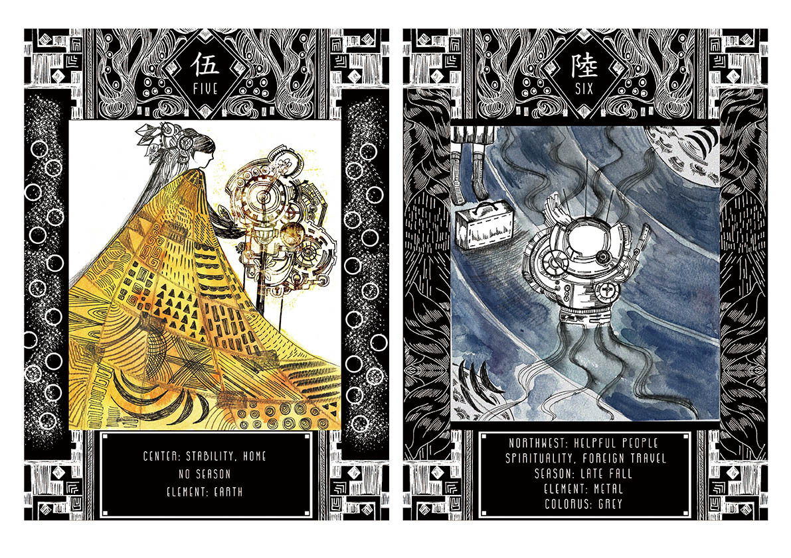
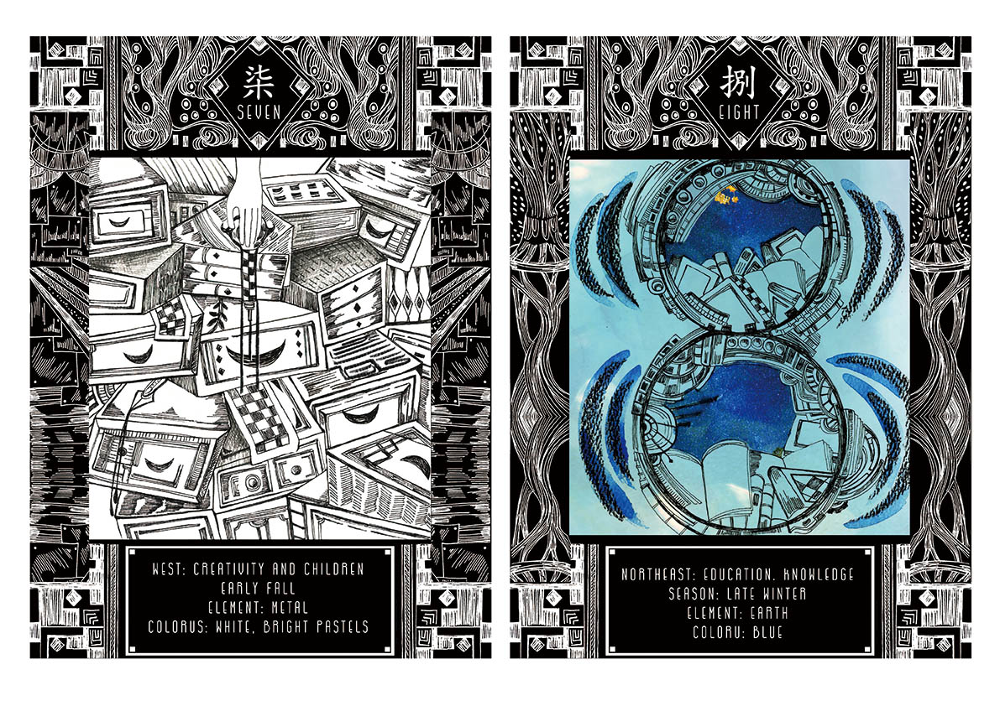

Feng Hsui Tarot Luo shu square風水：塔羅 洛書
Although we live in a high technology society with science, people still want to know their destiny.
In East society people like to discover what kind of things will appear on their future
,they prefer to use the conception from Feng Hsui to observed what kind of elements they can improve for fortune.
In my visual work, I put a number on the diamond shape on the top of cards, on the bottom are these card’s elements.
On the right and left’s frame is different elements: earth, water, fire, wood.
華人社會著迷於使用風水來預測未來或生活。
以歷史上的洛書和西方塔羅結合，使用不同視覺元素設計9 張卡牌，每張牌代表不同意義，根據不同組合來測試個人缺乏何種元素。




第五個網頁：回到 首頁